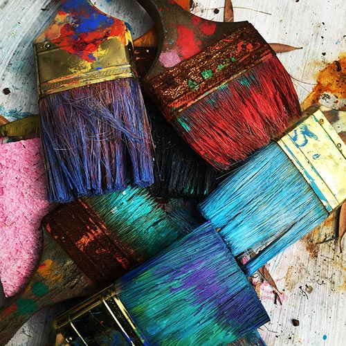
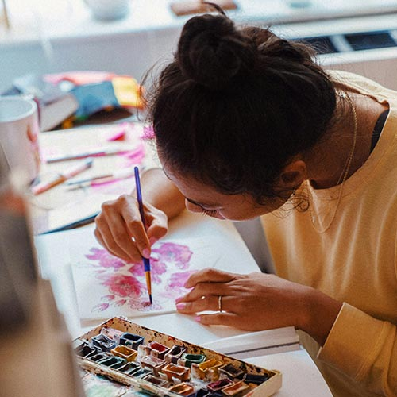
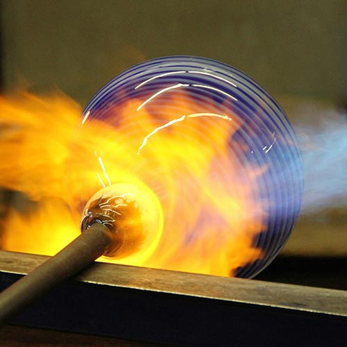

Vyberte si správné místo pro nákup malířských potřeb, ať už preferujete kamenné obchody nebo online e-shopy. Prozkoumejte nabídky specializovaných obchodů, kde najdete kvalitní barvy, štětce i další doplňky za příznivé ceny. Zaměřte se na srovnání aktuálních cen, dostupnosti zboží a zákaznických recenzí, aby se investice do vaší kreativity stala efektivní a přinášela dlouhodobou spokojenost.
Alena Nováková, 24.1.2025

Objevte techniky, které rozproudí vaše nápady a zamezí stagnaci v tvůrčím procesu. Změna prostředí, malé denní rituály a experimentování s novými přístupy mohou otevřít cestu ke kreativitě. Využijte praktické cvičení, seberozvojové strategie a inspirativní metody, které podporují volný tok nápadů a umožní vám snadno překonat období, kdy se zdá, že se inspirace ztratila.
Jaromír Nekňuba, 6.2.2025

Foukané sklo představuje unikátní spojení řemeslné zručnosti a uměleckého vyjádření, kdy se preciznost techniky snoubí s tvůrčí imaginací. Prozkoumejte historický vývoj tohoto řemesla, moderní trendy a různé techniky, které dokazují, že křehký materiál může vyjadřovat hluboké emoce. Inspirujte se příběhy umělců, kteří proměňují tradiční metody ve fascinující umělecká díla, oslovující jak znalce, tak nadšence.
Lenka Krásná, 17.2.2025